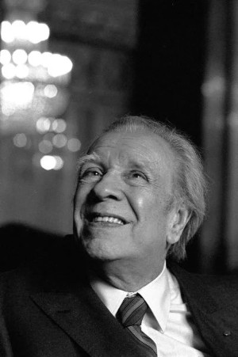

Borges Lúi [1899-1986]
"Chúng ta làm việc bằng cách mò mẫm… thế giới thì khó nắm bắt và luôn biến hóa, còn ngôn từ thì cứng nhắc…”. Với Borges [1899-1986], tác giả lời nói trên, thì nói đến “văn học” là chưa đủ, dẫu rằng đối với người gần như là một “phù thủy” này, thế giới là một cuốn sách. Quyền năng của ông còn vượt trên ngôn từ. Còn hơn là một nhà văn, Borges là một nhà phù thủy, kiểu như Homère hay Shakespeare. Ông từng viết: “Với mọi người, cuộc sống cho mọi thứ, nhưng phần lớn lại không biết ra điều đó”. Ông hy vọng tạo ra một “ảnh hưởng tốt đẹp”đến độc giả của mình và chẳng có một chiếc thảm bay kỳ diệu nào để bay tới cái mục tiêu đó. Ông còn nói: “Tôi tin mình đã thành công khi viết với một sự ngây thơ nào đó”. Không còn hồ nghi gì nữa về con người nay chỉ có nỗi lo cần phải giản dị của con người mà thư viện là một bản đồ thế giới và những ý tưởng của ông thì vươn tới tầm trí tuệ lớn lao; người có những tác phẩm khiến cho thế giới học thức hâm mộ nhưng quảng đại công chúng phải bối rối. Những mê lộ hay những trò phản quang của gương soi, những cánh cửa sổ hay những lối đi rẽ ra đôi ngả mang chất ảo ảnh, những tiểu sử tưởng tượng nhưng có tầm văn hóa sâu thăm thẳm – vẫn một thứ ngôn ngữ đó, mấp mé chất hoang tưởng và phi lý, liền lập tức hiện ra trong đầu khi người ta nghĩ đến Borges. Người ta từng bảo rằng Borges là một thế giới mà sự vô tận mở ra một sự vô tận khác, phải chăng ông là một kẻ tiên khu trong nền văn học lãng mạn huyền ảo của Mỹ La tinh?
Trước hết Borges là một trí thức lớn, một Thư viện Babel (tên một thiên truyện của ông) không chỉ chứa tất cả những cuốn sách đã được viết ra mà mọi cuốn sách có thể sẽ được viết ra. Hơn nữa bản thân cuộc đời ông xem ra cùng gắn liền với thư viện: Thư viện khổng lồ của người cha, một luật sư kiêm triết gia, rồi thư viện quốc gia Argentina mà ông là bạn đọc thường xuyên và không biết mệt mỏi trước khi trở thành vị giám đốc của nó.
Đối với ông, thư viện cũng là bản đồ thế giới. Trong Atlas ông đã kể ra một số nơi: Sau Buenos Aires và Genève, những thành phố của tuổi thơ và khi lớn khôn, đến những chuyến chu du với người vợ là Maria Kodama từ đảo Crete đến Reykjavik, từ Majorque đến khu phố Latinh, từ Venise đến Istanbul. Đi đi, lại lại, từ chuyến đi đến tác phẩm, từ ý tưởng đến cảm quan, từ Borges đến Borges và ngược lại. Có rất nhiều truyện nói lên cuộc đối thoại không thể có giữa người viết truyện với một Borges khác, già hơn hay trẻ hơn tùy bối cảnh thiên truyện. Những truyện này nằm trong những tác phẩm gây rối nhất trong văn học, đưa ra những biến số về địa lý và mang đầy nghịch lý. Giống như những triết gia của hành tinh Tlon (trong Khu vườn có những lối rẽ đôi) Borges không tìm thấy chân lý mà sự kinh ngạc. Ông nói “siêu hình là một nhánh của văn học huyễn tưởng”. L’Aede cầm lấy chiếc thụ cầm và tự kinh ngạc về mình. Tiếng nói các nhân vật xưa hòa lẫn với tiếng nói của ông, Homère, Averroes, Spinoza, Du Ryer, Voltaire, Schopenhauer, Blake, Kafka, Keats, Poe, Whitman, Melville… Họ gặp nhau, trở lại với tình yêu chứa chan, trong khi Mallarmé hay Joyce thì bị kết tội là huyền bí và sa xuống chín tầng địa ngục. Và ông viết: “Giấc mơ của một người tham dự vào ký ức của mọi người”. Ông còn viết một truyện kể nói đến giấc mơ Hồ điệp của Trang Tử, mà có người còn cho là còn hay hơn Shakespeare khi nói rằng “Chúng ta là chất liệu mà các giấc mơ đã tạo ra” vì rằng câu nói đó quá chung chung. Con bướm gợi nên sự gần gũi với cuộc sống - bướm là sinh vật có đời sống ngắn ngủi nên hoán dụ đó thật tuyệt vời. Đọc Borges là suy ngẫm dù ta chẳng muốn và chìa bàn tay đến cái tự tan chảy khi người ta muốn nắm lấy nó. Là một nhà văn thế giới với một kiến thức bách khoa nhưng có một văn phong dí dỏm, người ta dễ dàng hiểu ra rằng đối với hàng trăm ngàn độc giả khắp thế giới, chất bí ẩn và đùa cợt hẳn đã khiến ông trở thành một thần tượng thực sự. Sách của ông được bán ra hơn 800.000 cuốn và được dịch ra 29 thứ tiếng khác ngoài tiếng Tây Ban Nha.
Những hình ảnh đầu tiên của ông đến với tâm trí chúng ta là hình ảnh một ông già mắt lòa. Ông bị lòa từ năm 1955 và chính sự mù lòa này tự nó là một cách nghi vấn được nêu ra trong hơn một nửa thế kỷ trước toàn thế giới qua những tác phẩm ngắn dưới hình thức những câu đố hay những lời bóng bẩy của thơ trừu tượng, phi thời gian và phi không gian. Dựa vào cách thức tìm kiếm hay thăm dò, phần lớn những tác phẩm của Borges là những cuộc thâm nhập vào những vùng đất huyền thoại: Những huyền thoại Hy Lạp hay Bắc Âu, Người mang mặt nạ sắt, một H.G. Wells của Chiến tranh giữa các thế giới, Ngàn lẻ một đêm và Don Quichotte là những tác phẩm nền móng của một tư tưởng được hình thành từ rất sớm.
Thừa kế một di sản văn hóa rộng lớn, Borges đã đóng một vai trò quyết định trong việc đổi mới trí tuệ dân tộc trong suốt nửa đầu thế kỷ XX. Nó được xây đắp từ đầu với những huyền thoại phương xa và dần dần được pha thêm vào những huyền thoại Argentina nằm trong dòng máu của ông: Những không gian rộng lớn của đồng cỏ Pampa hay cuộc sống căng thẳng của thủ đô, chất lai da trắng và mê lộ của các khu ngoại vi, nơi mà mùi thịt nướng pha lẫn với mùi mồ hôi của các vũ nữ điệu tango và mùi của thứ chè đặc sản Nam Mỹ mate.
Vào tối thứ bảy tại quán cà phê Perla, Borges thích thú học theo cái thế giới đầy màu sắc đã trở nên thân thuộc biết bao đối với ông. Ông có mặt trên mọi trận tuyến, tham gia việc lập ra những tạp chí văn học (Proa năm 1924 và Sur năm 1931), cùng với một số bạn bè, từ Macedonio Fernandez đến Silvina và Victoria Ocampo (Người tình trong mộng của Tagore), rồi Adolfo Bioy Casares và cả một người Pháp là Roger Caillois, lập ra một nhóm gắn bó và tỏa sáng, một thứ “Hội ái hữu Nam Mỹ” của những nhà văn và nghệ sĩ đến từ khắp thế giới. Những tấm ảnh xúc động còn giữ lại được về hội đoàn này khiến người ta ao ước: Những người đàn ông và đàn bà này bỗng hiện ra thật đẹp đẽ làm sao trước con mắt chúng ta, những người con người đã tạo ra một mảng văn học riêng của Argentina. Chính việc thông qua vô vàn những mối quan hệ ẩn dấu hay bộc lộ với hội đoàn đó được nhắc đến một cách tản mạn trong các tác phẩm ông là bối cảnh cho những tuyệt tác của ông. Chẳng hạn như L’Alephgiống như một văn bản tìm thấy trong một chiếc chai hay đúng hơn trong tập cuối của thiên Iliade của thế kỷ XVIII, hay những nghi lễ xa lạ được miêu tả trong nhiều mẩu chuyện của Fictions hay L’Histoire universelle de I’infamie. Rõ ràng đấy không phải là ông Borges cống hiến cho chúng ta những mẩu chuyện dân gian Argentina - mà đúng hơn là ông đã làm cái việc này - biến xứ sở Argentina của dân lai da trắng thành một vùng đất nặc danh trên đó những giấc mơ của cả hành tinh lại trở thành giấc mơ của mỗi chúng ta từ cái nơi diễn ra mọi cuộc gặp gỡ và từ thế giới vi mô mở ra một thế giới vĩ mô.
Người ta muốn tin rằng những người mù đều thấy rõ mọi thứ giống như Trésias hay Homère. Borges ẩn náu trong những lâu đài tối tăm của ký ức siêu việt của mình. “Một người mù trong căn nhà hun hút… những ngón tay ông sờ soạng trên những bức tường chạy dài, trên những gáy sách gồ ghề ngăn cản tình yêu của ông… không ai bảo, ông nằm xuống trên chiếc giường cô đơn… Ông cao giọng ngâm nga những đoạn thơ cổ, thả hồn theo những biến tấu của các động từ, các tính từ, dù hay dù dở, viết ra những vần thơ đó”. Vào tuổi xế chiều, Borges mời mọc chúng ta bước vào căn nhà tăm tối của ông, như một ân huệ tột cùng, vào cái nơi sinh ra những huyền thoại. Và ta hãy mò mẫm bước vào!